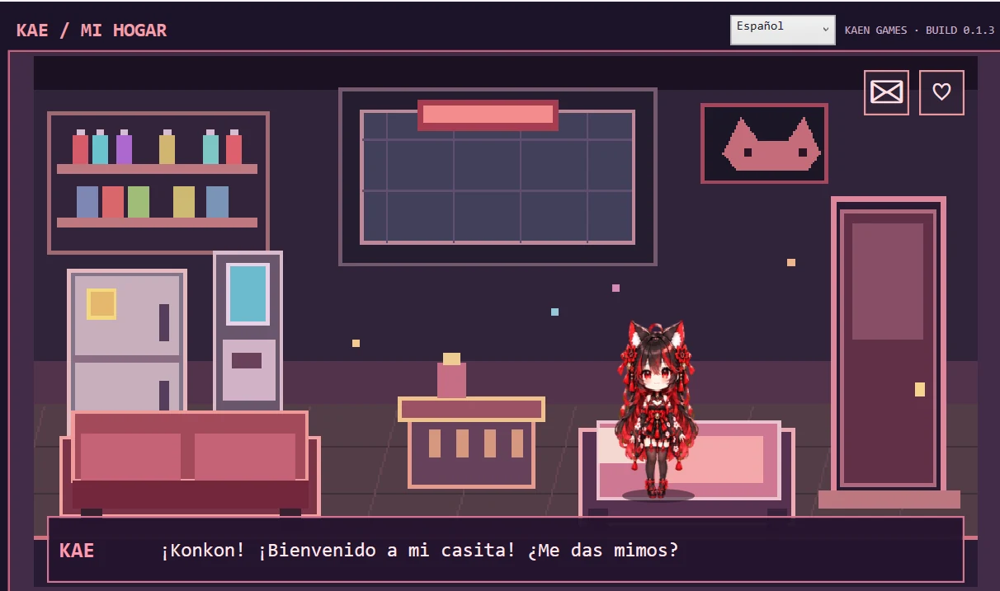
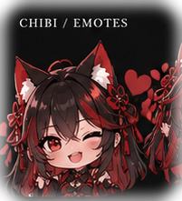
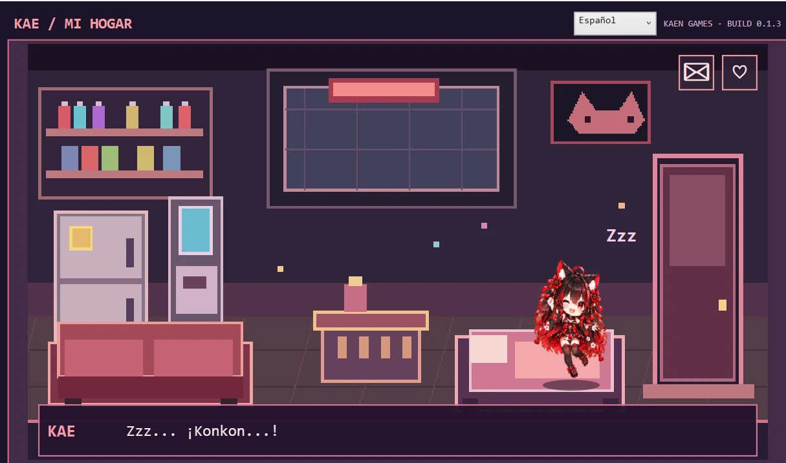
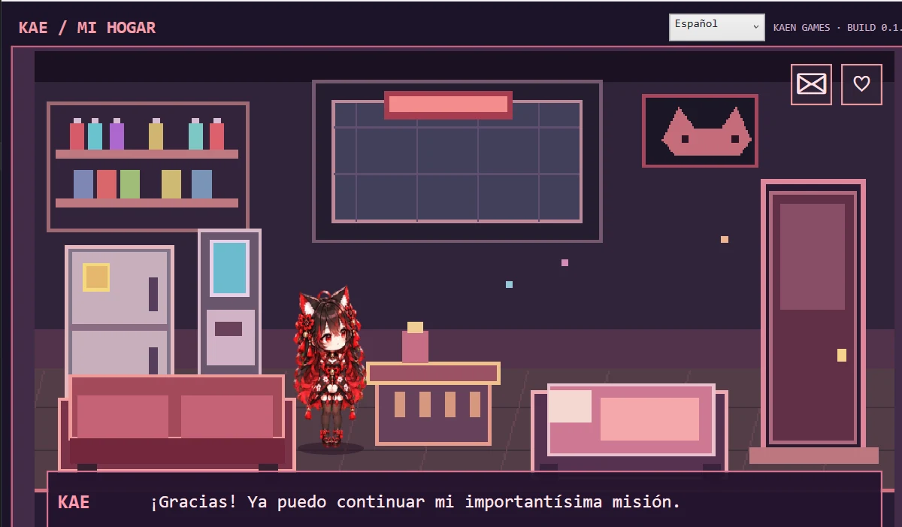
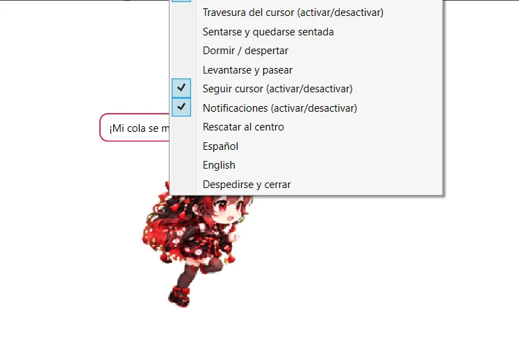

🏠
Her cozy home
Spend time with Kae in her own room, complete with charming pixel-art furniture and her favorite place to nap.
Meet Kae, our mischievous little kitsune with a big personality and an even bigger appetite for attention. Take care of her in her cozy home… then let her turn your Windows desktop into her playground.


Kae is playful, cheeky, affectionate and just a little demanding. Her home is only the beginning — she's always ready to explore, ask for affection, and interrupt your day with a very important announcement.
Spend time with Kae in her own room, complete with charming pixel-art furniture and her favorite place to nap.
Let Kae leave her home and wander around your Windows desktop, with movement and action controls.
Get to know her cheeky personality through little text bubbles, greetings and playful requests.
Look after her needs, share affection and spend time with your very demanding little companion.
Watch her sleep, walk around or react to your interactions — Kae always has something to do.
Choose Spanish or English, both supported in the game.
Real screenshots from the Windows game — yes, she's every bit as mischievous as she looks.



Meet your mischievous new desktop companion in our short official trailer.
Actual game footage from the latest development recording. No simulated features or mock gameplay.
Kae Virtual Pet is complete. We're preparing the final Windows download package for the official website.
The direct Windows download will appear here once the final build is uploaded.
WINDOWS · ES / EN